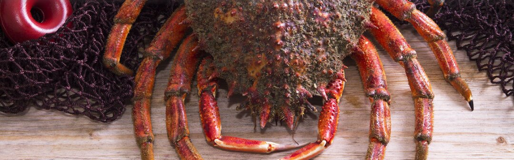

Cómo cocer un centollo correctamente
Tiempos y trucos para que quede perfecto.

El centollo es un crustáceo de la familia de los cangrejos. Tiene un caparazón grueso, rojizo, cubierto de pinchos y de apariencia rugosa, y cinco pares de patas robustas, con unas pinzas pequeñas y alargadas en el primer par.
Lo ideal sería cocer el marisco en agua de mar, pero por los problemas sanitarios que puede presentar y la dificultad de conseguirla, lo mejor es reproducir en el agua de cocción una salinidad parecida: ponemos una olla alta y grande con 70 gramos de sal por litro de agua, unos cinco litros por pieza.
El centollo puede llegar a casa vivo o no, y la forma de cocerlo cambia en cada caso:
- Si está vivo, se pone a cocer en agua fría con sal hasta que hierva, y a partir de ahí se cuenta el tiempo según su peso. Así no se le separan las patas del cuerpo por el contraste de temperatura.
- Si no está vivo, se echa en el agua ya hirviendo, y el tiempo se cuenta desde que el agua vuelve a hervir.
Tiempos de referencia
| Peso | Tiempo |
|---|---|
| 0,500 kg a 1 kg | 17 minutos |
| 1 kg a 1,200 kg | 20 minutos |
| 1,200 kg a 1,600 kg | 25 minutos |
| 1,600 kg a 2,500 kg | 30 minutos |
Una vez cocido, se saca del agua y se recomienda consumirlo enseguida, sin guardarlo en la nevera, porque el frío reseca la carne.